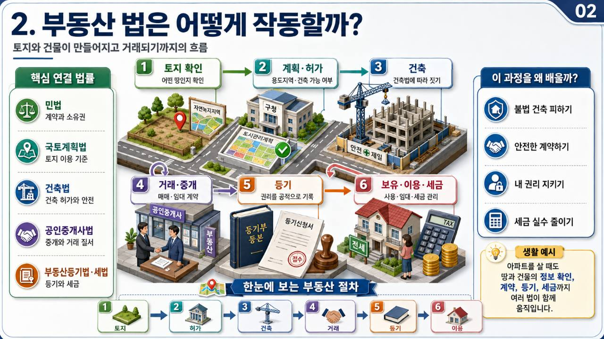

상위 단원
이 페이지는 총론: 부동산 법제의 기초 단원에 포함됩니다. 강의목차에서 같은 묶음의 앞뒤 주제를 함께 확인하세요.
1. 하나의 법으로 해결되지 않는 이유
대한민국의 부동산 관련 법령은 하나의 법률로 모두 해결되지 않습니다. 부동산은 소유권의 대상이면서, 도시계획의 대상이고, 건축행위의 대상이며, 거래와 임대차의 대상이고, 공익사업이 있으면 수용과 보상의 대상이 됩니다.
따라서 부동산 법체계는 법의 목적별로 역할을 나누어 이해해야 합니다. 권리관계를 정리하는 법, 이용 가능성을 정하는 법, 건축 안전을 확인하는 법, 거래 약자를 보호하는 법, 공익사업 보상을 정하는 법이 서로 다른 층위에서 작동합니다.

| 법체계 축 | 담당하는 질문 | 대표 법령 |
|---|---|---|
| 권리와 공시 | 누가 소유자이고 어떤 권리가 설정되어 있는가 | 민법, 부동산등기법, 공간정보법, 부동산공시법 |
| 계획과 이용 | 토지를 어떤 용도로 사용할 수 있는가 | 국토계획법, 농지법, 산지관리법 |
| 건축과 안전 | 건물을 지을 수 있고 안전기준을 충족하는가 | 건축법, 건설산업기본법 |
| 거래와 임대차 | 매매ㆍ임대차에서 당사자를 어떻게 보호하는가 | 주택임대차보호법, 상가건물 임대차보호법 |
| 수용과 보상 | 공익사업으로 취득ㆍ사용할 때 절차와 보상은 어떻게 되는가 | 토지보상법 |
2. 권리 공시의 원리: 등기와 공부
부동산은 가치가 크고 여러 사람이 이해관계를 가질 수 있으므로 권리와 표시를 외부에서 확인할 수 있어야 합니다. 부동산등기법은 토지와 건물의 소유권, 저당권, 전세권 등 권리관계를 등기부에 기록하여 거래 안전과 권리 순위를 확인하게 합니다.
공간정보법과 지적제도는 토지의 소재, 지번, 지목, 면적, 경계를 공적으로 표시합니다. 등기가 권리관계를 보여 준다면, 지적공부는 토지의 물리적ㆍ행정적 표시를 보여 주는 자료입니다.
소유권, 저당권, 전세권, 가등기 등 권리관계와 순위를 확인합니다.
소재, 지번, 지목, 면적, 경계 등 토지의 공적 표시를 확인합니다.
세금, 부담금, 보상평가 참고자료 등 다양한 행정 판단에 연결됩니다.
3. 계획ㆍ건축ㆍ건설의 역할 분담
국토계획법은 토지 이용의 큰 틀을 정합니다. 어느 지역을 주거, 상업, 공업, 녹지, 농림, 자연환경보전 등으로 사용할지 정하고, 개발행위가 도시ㆍ군관리계획에 맞게 이루어지도록 관리합니다.
건축법은 건축물의 허가, 신고, 대지와 도로, 구조와 안전, 피난과 방화, 사용승인 등을 규율합니다. 건설 과정에서 발주자, 시공사, 하도급업체 사이의 시공 책임과 거래 질서는 건설산업기본법, 하도급거래 공정화에 관한 법률 등과 연결됩니다.
| 단계 | 핵심 법령 | 쉬운 예시 |
|---|---|---|
| 토지 이용 가능성 | 국토계획법 | 이 토지에 공장이나 창고를 지을 수 있는지 확인 |
| 건축 허가와 기준 | 건축법 | 대지가 도로에 접하는지, 건폐율ㆍ용적률을 지키는지 확인 |
| 시공과 책임 | 건설산업기본법 | 건설업 등록, 도급계약, 시공 책임 확인 |
| 하도급 공정성 | 하도급거래 공정화에 관한 법률 | 하도급 대금, 부당특약, 지연지급 문제 확인 |
4. 임대차와 거래 약자 보호
부동산 임대차는 민법상 계약이지만, 주거와 생업의 기반이 되기 때문에 특별법상 보호가 강하게 작동합니다. 주택임대차보호법은 주거용 건물 임차인의 대항력, 우선변제권, 보증금 반환 보호를 중심으로 합니다.
상가건물 임대차보호법은 영업 장소를 빌린 임차인의 계약갱신, 보증금 보호, 권리금 회수 기회 보호 등과 연결됩니다. 즉 임대차 시장에서는 계약 자유 원칙이 그대로만 적용되는 것이 아니라, 임차인 보호라는 사회적 목적이 함께 반영됩니다.
- 주택임대차: 주민등록, 인도, 확정일자, 보증금 반환 보호를 중심으로 봅니다.
- 상가임대차: 사업자등록, 인도, 계약갱신, 권리금 회수 기회 보호가 중요합니다.
- 거래 안전: 등기, 대항력, 우선변제, 확정일자처럼 제3자 관계를 확인합니다.
- 시험 포인트: 민법상 임대차와 특별법상 보호 요건을 구분합니다.
5. 공익사업 수용과 보상의 원리
공익사업을 위해 토지나 물건을 취득ㆍ사용해야 하는 경우에는 토지보상법이 절차와 보상 기준을 정합니다. 사유재산권을 제한하거나 이전시키는 절차이므로 사업인정, 협의, 재결, 보상금 지급 또는 공탁, 수용개시일 같은 절차가 중요합니다.
예를 들어 도로사업으로 토지 일부가 편입되면 등기부상 소유자, 지적공부상 면적, 실제 이용상황, 건축물ㆍ입목 등 물건, 임차인이나 담보권자 같은 관계인을 함께 확인해야 합니다. 이처럼 수용과 보상은 부동산 법체계의 여러 축이 한꺼번에 모이는 장면입니다.
- 사업구역과 편입 토지를 확인합니다.
- 등기부와 지적공부로 소유자와 면적을 확인합니다.
- 토지이용계획과 현실 이용상황을 함께 봅니다.
- 건물, 공작물, 입목, 영업손실 등 보상대상을 조사합니다.
- 협의가 되지 않으면 재결과 불복절차로 이어질 수 있습니다.
상세 강의 해설
부동산 법체계의 기본 원리는 부동산관계법규에서 독립적으로 외울 항목이 아니라, 사례를 읽는 순서와 판단 기준을 함께 익혀야 하는 주제입니다. 이 단원은 부동산과 법의 관계, 부동산 법체계의 기본 원리, 법령 간 상호작용 같은 하위 주제로 이어지므로, 큰 제목을 먼저 잡고 세부 주제를 내려가며 읽는 것이 좋습니다.
먼저 부동산 법체계는 권리, 이용, 건축, 거래, 보상 기능별로 역할을 나누어 작동합니다. / 부동산등기법은 권리 공시, 공간정보ㆍ지적제도는 토지 표시 공시와 연결됩니다. / 국토계획법은 토지 이용의 큰 틀을, 건축법은 건축물의 허가와 안전 기준을 정합니다.를 한 묶음으로 잡으세요. 그런 다음 사례에서 사실관계를 읽고, 어느 요건이 충족되었는지 표시하면 긴 선택지도 짧은 판단 문제로 바뀝니다.
부동산관계법규는 토지를 실제로 어떻게 이용할 수 있는지 판단하는 법령 묶음입니다. 같은 토지라도 용도지역, 허가 여부, 공부상 표시, 건축 가능성, 농지ㆍ산지 제한에 따라 보상평가와 사업 진행 가능성이 달라집니다.
기출형 선택지에서는 법령을 법률명으로 외우기보다 목적과 적용 장면으로 분류합니다. / 권리 공시와 토지 표시 공시는 서로 다른 축입니다.처럼 주체, 요건, 효과 중 하나만 바꾸는 방식이 자주 쓰입니다. 따라서 정답을 고른 뒤에도 틀린 선택지가 왜 틀렸는지 한 줄로 적어 두는 것이 좋습니다.
각 법령을 공부할 때는 정의, 지정ㆍ허가권자, 절차, 제한 효과, 위반 시 처리 순서로 정리하세요. 시험 선택지는 법률명은 맞게 두고 주체나 효과만 바꾸는 경우가 많아, 표로 비교해 두면 오답을 빠르게 거를 수 있습니다.
핵심 개념
- 부동산 법체계는 권리, 이용, 건축, 거래, 보상 기능별로 역할을 나누어 작동합니다.
- 부동산등기법은 권리 공시, 공간정보ㆍ지적제도는 토지 표시 공시와 연결됩니다.
- 국토계획법은 토지 이용의 큰 틀을, 건축법은 건축물의 허가와 안전 기준을 정합니다.
- 임대차 특별법은 주거와 영업 기반을 보호하기 위해 계약 자유를 일정하게 수정합니다.
- 토지보상법은 공익사업을 위한 취득ㆍ사용 절차와 손실보상 기준을 정합니다.
시험 포인트
- 법령을 법률명으로 외우기보다 목적과 적용 장면으로 분류합니다.
- 권리 공시와 토지 표시 공시는 서로 다른 축입니다.
- 국토계획법과 건축법은 모두 개발과 관련되지만 규율 단계가 다릅니다.
- 임대차 특별법은 민법상 계약관계를 보완하는 보호법입니다.
- 수용과 보상은 등기, 지적, 이용상황, 관계인 판단을 함께 묻습니다.
복습 질문
- 부동산 법체계의 기본 원리에서 가장 먼저 확인해야 할 기준은 무엇인가요?
- 이 단원이 부동산관계법규의 다른 단원과 연결되는 지점은 어디인가요?
- 기출 선택지에서 주체, 요건, 효과 중 무엇을 바꾸면 오답이 되나요?
Past Exam Style
과년도 유사 예시 문제풀이
실제 기출에서 반복된 출제 포인트를 같은 구조의 예상문제로 바꾸어 정리했습니다.
예시 1. 부동산 법체계의 기본 원리 문제를 풀 때 가장 먼저 확인할 사항은?
- 법률상 정의와 적용 대상
- 수험생의 거주지
- 토지 색상
- 사업시행자의 홍보문구
관계법규 문제는 정의, 적용 대상, 허가권자, 제한 효과를 먼저 잡아야 선택지의 주체ㆍ절차 바꾸기를 걸러낼 수 있습니다.
예시 2. 부동산 관계법규가 보상실무와 연결되는 이유로 옳은 것은?
- 토지의 이용가능성과 법적 제한이 가치 판단에 영향을 주기 때문이다.
- 모든 토지는 법적 제한 없이 동일하게 이용되기 때문이다.
- 등기부를 볼 필요가 없어지기 때문이다.
- 공익사업 절차를 생략할 수 있기 때문이다.
용도지역, 건축 제한, 농지ㆍ산지 전용 제한 등은 토지의 현실적 이용과 가치 판단에 영향을 주므로 보상관리에서 중요합니다.
연결 학습
이 단원을 읽은 뒤에는 문제풀이 페이지에서 같은 과목을 선택해 5문항 이상 풀어 보세요. 정답보다 중요한 것은 선택지마다 근거를 붙이는 연습입니다.